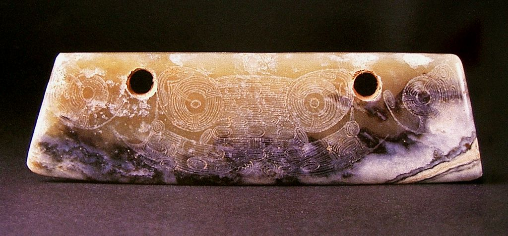

中国玉文化是一首凝固的史诗，有着浓浓的历史沉淀感，每一段历史，玉器都有它特殊的精神气质；每一段历史，玉器都有它特有的形式美感。 1.新石器时期玉器工艺——文明曙光 神圣玉魂 距今五千五百年至四千年，我国玉器工艺达到历史上的第一个高峰，原始社会玉器工艺最发达的地区北起内蒙古赤峰，南迄广东曲江，构成代表最高玉器制作水平的“弧形玉器带”。其中红山文化和良渚文化玉器是原始社会最杰出的代表。 红山时期 玉人
红山文化 勾云形佩1
红山文化 勾云形佩2
红山文化 勾云形玉佩
红山文化 青玉鸟纹圭 39cm高
红山文化 兽面形玉饰
 红山文化 双人神像 红山文化 双人神像红山文化 玉勾形器
红山文化 玉勾云鸟形佩
 红山文化 玉龙 红山文化 玉龙红山文化 玉神人
红山文化 玉神祖（又称太阳神）
红山文化 玉兽形玦1
 红山文化 玉兽形玦2 红山文化 玉兽形玦2红山文化 玉双角神人器
 红山文化 玉鹰形佩 红山文化 玉鹰形佩红山文化 玉猪龙
红山文化晚期 玉鸟
良渚文化 春秋时的兽面纹
良渚文化 琮面纹饰
良渚文化 刀形佩
良渚文化 三叉形器
良渚文化 神人兽面纹玉饰
 良渚文化 兽面纹 良渚文化 兽面纹良渚文化 玉壁
 良渚文化 玉璧 良渚文化 玉璧良渚文化 玉琮1
良渚文化 玉琮2
良渚文化 玉琮3
良渚文化 玉琮4
良渚文化 玉琮5
良渚文化 玉琮6
良渚文化 玉冠状饰
良渚文化 玉璜
良渚文化 玉牌饰
良渚文化 玉三叉形器
良渚文化 玉三叉形器1
良渚文化 玉鱼
良渚文化 玉锥形饰1
良渚文化 玉锥形饰2
良渚文化 玉锥形饰3
良渚文化 玉锥形饰4
良渚文化 玉锥形饰5
良渚文化 玉镯1
良渚文化 玉镯2
 良渚文化 良渚文化良渚文化1
龙山文化 凤攫人首佩1
 龙山文化 凤攫人首佩2 龙山文化 凤攫人首佩2龙山文化 神面纹玉饰1
|
| 珠宝设计网站 中国珠宝设计网 国际珠宝网 傲宝网 BACCARAT |
雕塑设计网站 中国雕塑网 |
玉器图库 一些挂件 一些手把件 一些摆件 |
玉器设计与雕刻大赛 上海玉器雕刻神功奖 上海玉器雕刻玉龙奖 北京玉器雕刻天工奖 |
玉器设计与工艺发展动态 玉器设计与工艺过去 玉器设计与工艺现在 玉器设计与工艺未来 |